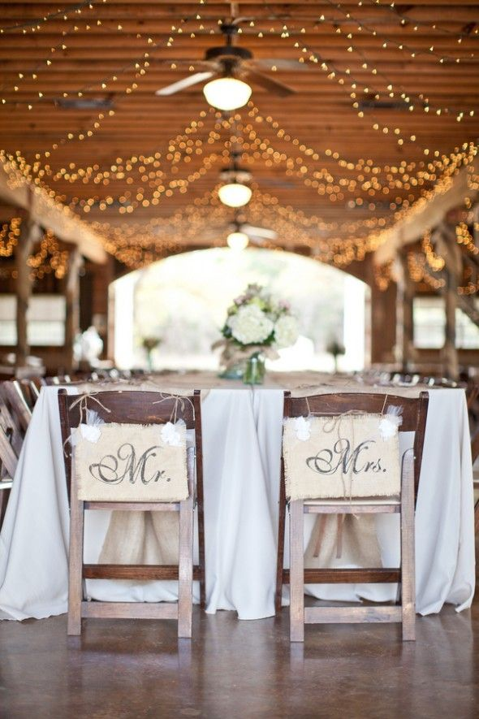

INDOOR WHITE THEME

INDOOR THEME

INDOOR THEME

INDOOR wedding themes provide you with a lot of room to get creative and spontaneous. Choose 8 colors for your pallet. Mix satin, velvet, and lace. Play rock, pop, and country. What ties it all together? Something as simple as sunflowers splashed This iconic summer flower brings you joy the second you see it and is the ideal symbol for your big day.